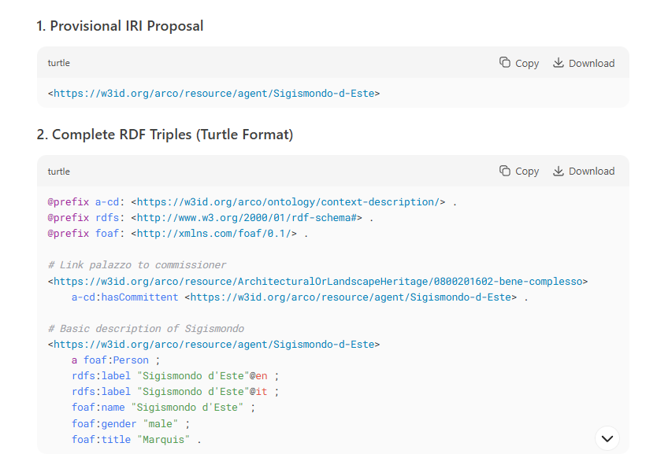
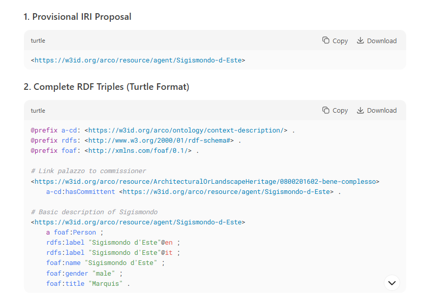
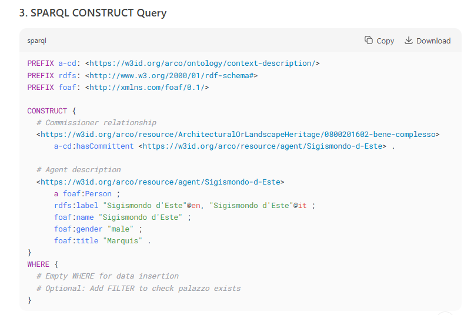
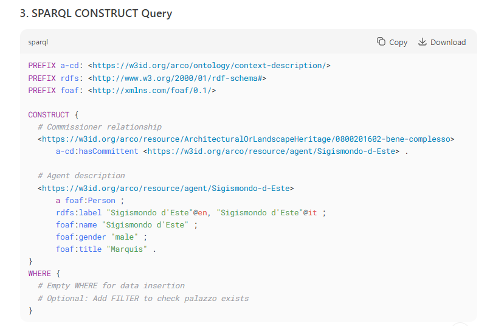

RDF triples
CONSTRUCT queries
1. AUTHOR
To fill the first gap, we asked two different LLMs (ChatGPT and DeepSeek) to help us creating the triples that were later used for our CONSTRUCT queries.
We know what our subject, predicate and object are thanks to our SELECT queries:
1. SUBJECT: Palazzo dei Diamanti -
<https://w3id.org/arco/resource/ArchitecturalOrLandscapeHeritage/0800201602-bene-complesso>
2. PREDICATE: a-cd:hasAuthor
3. OBJECT: Rossetti Biagio -
<https://w3id.org/arco/resource/Agent/cb6b3b232a0e002ec5aac6af75410092>
üí¨PROMPT:
Hi, I want to enrich the ArCo knowledge graph by adding new RDF triples to the resource Palazzo dei Diamanti (0800201602). Now we want to add who the author of Palazzo dei Diamanti is. Can you create an RDF triple based on the sentence "Biagio Rossetti is the author of Palazzo dei Diamanti"?
Note that the IRI for Palazzo dei Diamanti is:
<https://w3id.org/arco/resource/ArchitecturalOrLandscapeHeritage/0800201602-bene-complesso>,
the predicate has to be a-cd:hasAuthor, and the object is “Biagio Rossetti”
(resource: <https://w3id.org/arco/resource/Agent/cb6b3b232a0e002ec5aac6af75410092>).

üí¨PROMPT:
Now I want to create a CONSTRUCT query for ArCo SPARQL endpoint with this triple.

Now, we tried to run both queries and we noticed that ChatGPT's result was an error. Instead, DeepSeek's answer worked.

Now, we wanted to add both the label for Biagio Rossetti and a link to his Wikidata's resource. So, we asked another prompt to both LLMs.
üí¨PROMPT:
Perfect, I want to add a label for the agent "Biagio Rossetti" in my CONSTRUCT query. Also, I need to add a link to his Wikidata's resource (Q855263)

We tried to run both queries: ChatGPT's one gave us 'error',
but worked without BIND; DeepSeek's answer worked immediately.
Even though DeepSeek's query was correct, we thought to manually adjust it to make it better.
✅Final CONSTRUCT query - author:
PREFIX arco-core: <https://w3id.org/arco/core/>
PREFIX a-cd: <https://w3id.org/arco/ontology/context-description/>
PREFIX rdfs: <http://www.w3.org/2000/01/rdf-schema#>
PREFIX agent: <https://w3id.org/arco/resource/Agent/>
PREFIX owl: <http://www.w3.org/2002/07/owl#>
CONSTRUCT {
<https://w3id.org/arco/resource/ArchitecturalOrLandscapeHeritage/0800201602-bene-complesso>
a-cd:hasAuthor
<https://w3id.org/arco/resource/Agent/cb6b3b232a0e002ec5aac6af75410092> .
<https://w3id.org/arco/resource/Agent/cb6b3b232a0e002ec5aac6af75410092>
rdfs:label "Biagio Rossetti" ;
owl:sameAs <https://www.wikidata.org/wiki/Q855263> .
}
WHERE {
}
2. COMMITTENT
The second gap we wanted to fill was the committent, Sigismondo d'Este. Unfortunately, there isn't an ArCo resouce for Sigismondo d'Este, so we had to ask ChatGPT and DeepSeek to
give us the triple and >CONSTRUCT query with a provisional IRI. We know what our subject and predicate are thanks to our SELECT queries:
1. SUBJECT: Palazzo dei Diamanti -
<https://w3id.org/arco/resource/ArchitecturalOrLandscapeHeritage/0800201602-bene-complesso>
2. PREDICATE: a-cd:hasCommittent
3. OBJECT: Sigismondo d'Este -
üí¨PROMPT:
Hi, I want to enrich ArCo knowledge graph by adding new RDF triples to the resource Palazzo dei Diamanti (0800201602).
Now we want to add who the committent of Palazzo dei Diamanti is. Can you create an RDF triple based on the sentence
"Sigismondo D’Este is the committent of Palazzo dei diamanti". Note that the IRI for Palazzo dei Diamanti is:
https://w3id.org/arco/resource/ArchitecturalOrLandscapeHeritage/0800201602-bene-complesso, the predicate has to be a-cd:hasCommittent
and the object is Sigismondo d’Este, but I don't have the IRI resource for him. We need a provisional IRI for Sigismondo d'Este.
 

üí¨PROMPT:
Now I want to create a CONSTRUCT query for ArCo SPARQL endpoint with this triple.
 

Both ChatGPT's and DeepSeek's answers worked immediately. Nonetheless, DeepSeek's answer already gave us more information without us asking for it (label, gender, title).

We still had to manually modify the query for it to be tidier and more correct. We used the placeholder ex:, as object of our triple, since we had no IRI for Sigismondo d'Este.
✅Final CONSTRUCT query - committent:
PREFIX a-cd: <https://w3id.org/arco/ontology/context-description/>
PREFIX rdfs: <http://www.w3.org/2000/01/rdf-schema#>
PREFIX ex: <http://example.org/>
PREFIX foaf: <http://xmlns.com/foaf/0.1/>
CONSTRUCT {
<https://w3id.org/arco/resource/ArchitecturalOrLandscapeHeritage/0800201602-bene-complesso>
a-cd:hasCommittent ex:SigismondoDEste .
ex:SigismondoDEste
rdfs:label "Sigismondo D'Este"@it ;
rdfs:type foaf:Agent .
}
WHERE {
}
3. CULTURAL PROPERTY ADDRESS
The third gap we wanted to fill was the full address of Palazzo dei Diamanti.
We know what our subject, predicate and object are thanks to our SELECT queries:
1. SUBJECT: Palazzo dei Diamanti -
<https://w3id.org/arco/resource/ArchitecturalOrLandscapeHeritage/0800201602-bene-complesso>
2. PREDICATE: a-loc:hasCulturalPropertyAddress
3. OBJECT: Corso Ercole I D'Este, Ferrara, Italia -
<https://w3id.org/arco/resource/Address/Indirizzo_della_sede_di_Gallerie_Estensi_-_Pinacoteca_nazionale_di_Ferrara32022>
üí¨PROMPT:
Hi, I want to enrich ArCo knowledge graph by adding new RDF triples to the resource Palazzo dei Diamanti (0800201602).
Now we want to add the full address of Palazzo dei Diamanti. Can you create an RDF triple based on the sentence
"Corso Ercole I D'Este, Ferrara, Italia is the full cultural property address of Palazzo dei diamanti". Note that the IRI for Palazzo dei Diamanti is:
https://w3id.org/arco/resource/ArchitecturalOrLandscapeHeritage/0800201602-bene-complesso, the predicate has to be a-loc:hasCulturalPropertyAddress
and the object is Corso Ercole I D'Este, Ferrara, Italia, (IRI: https://w3id.org/arco/resource/Address/Indirizzo_della_sede_di_Gallerie_Estensi_-_Pinacoteca_nazionale_di_Ferrara32022).
üí¨PROMPT:
Now I want to create a CONSTRUCT query for ArCo SPARQL endpoint with this triple. Can you also add the label: Corso Ercole I D'Este, Ferrara, Italia.
Neither ChatGPT's and DeepSeek's answers worked immediately (ChatGPT's answer gave us an error, whereas DeepSeek's one gave us "Virtuoso S1TAT Error Query did not complete due to ANYTIME timeout.". Then, we tried to manually change both queries and cancelled everything inside WHERE {}, and left it blank. By going this, they both gave us the same result.
✅Final CONSTRUCT query - cultural property address:
PREFIX a-loc: <http://dati.beniculturali.it/onto/a-loc#>
PREFIX rdfs: <http://www.w3.org/2000/01/rdf-schema#>
CONSTRUCT {
<https://w3id.org/arco/resource/ArchitecturalOrLandscapeHeritage/0800201602-bene-complesso>
a-loc:hasCulturalPropertyAddress
<https://w3id.org/arco/resource/Address/Indirizzo_della_sede_di_Gallerie_Estensi_-_Pinacoteca_nazionale_di_Ferrara32022> .
<https://w3id.org/arco/resource/Address/Indirizzo_della_sede_di_Gallerie_Estensi_-_Pinacoteca_nazionale_di_Ferrara32022>
rdfs:label "Corso Ercole I D'Este, Ferrara, Italia" @it .
}
WHERE {
}
4. HAS USE
The third gap we wanted to fill was the use of Palazzo dei Diamanti.
We know what our subject, predicate and object are thanks to our SELECT queries:
1. SUBJECT: Palazzo dei Diamanti -
<https://w3id.org/arco/resource/ArchitecturalOrLandscapeHeritage/0800201602-bene-complesso>
2. PREDICATE: a-cd:hasUse
3. OBJECT: Pinacoteca Nazionale di Ferrara -
<https://w3id.org/arco/resource/CulturalInstituteOrSite/20151>
üí¨PROMPT:
Hi, I want to enrich ArCo knowledge graph by adding new RDF triples to the resource Palazzo dei Diamanti (0800201602).
Now we want to add the use of Palazzo dei Diamanti. it hosts the Pinacoteca Nazionale di Ferrara. Can you create an RDF triple based on the sentence
"Palazzo dei Diamanti hosts the Pinacoteca Nazionale di Ferrara". Note that the IRI for Palazzo dei Diamanti is:
https://w3id.org/arco/resource/ArchitecturalOrLandscapeHeritage/0800201602-bene-complesso, the predicate has to be a-cd:hasUse
and the object is Pinacoteca Nazionale di Ferrara, (IRI: https://w3id.org/arco/resource/CulturalInstituteOrSite/20151).
üí¨PROMPT:
Now I want to create a CONSTRUCT query for ArCo SPARQL endpoint with this triple. Can you also add the label: Pinacoteca Nazionale di Ferrara.
Neither ChatGPT's and DeepSeek's answers worked immediately (ChatGPT's answer gave us an error, whereas DeepSeek's one gave us "Virtuoso S1TAT Error Query did not complete due to ANYTIME timeout.". Then, we tried to manually change both queries and cancelled everything inside WHERE {}, and left it blank. By going this, they both gave us the same result.
✅Final CONSTRUCT query - has use:
PREFIX a-cd: <https://w3id.org/arco/ontology/context-description/>
PREFIX rdfs: <http://www.w3.org/2000/01/rdf-schema#>
CONSTRUCT {
<https://w3id.org/arco/resource/ArchitecturalOrLandscapeHeritage/0800201602-bene-complesso>
a-cd:hasUse
<https://w3id.org/arco/resource/CulturalInstituteOrSite/20151> .
<https://w3id.org/arco/resource/CulturalInstituteOrSite/20151>
rdfs:label "Pinacoteca Nazionale di Ferrara"@it .
}
WHERE {
}